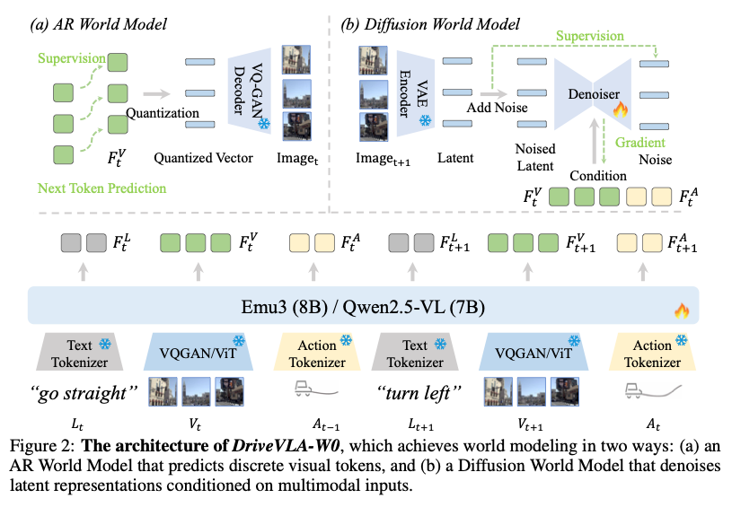
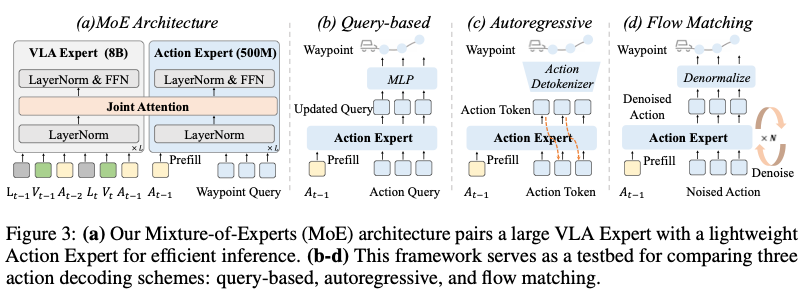
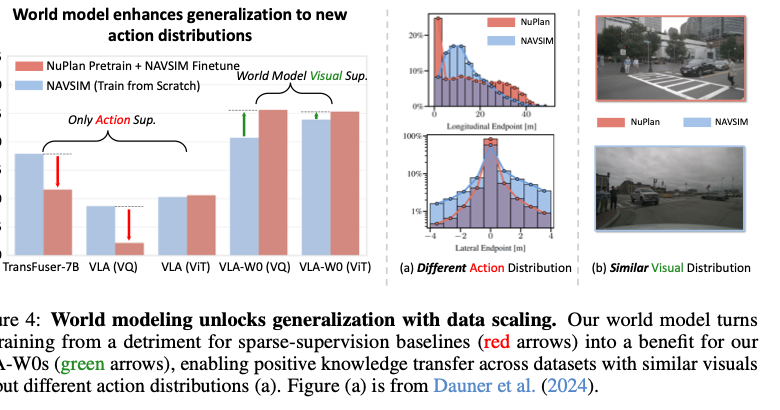
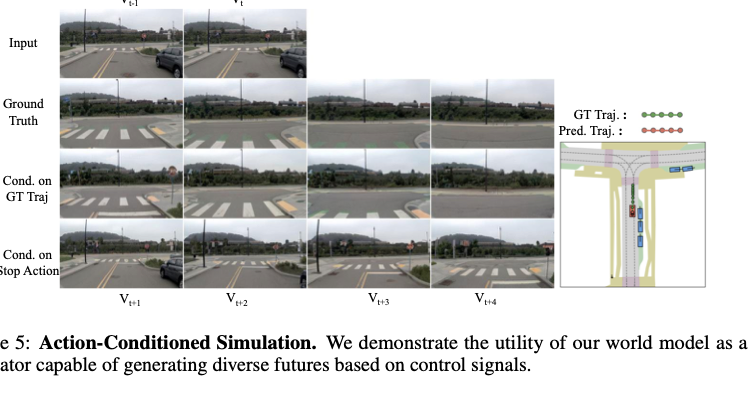

一句话总结
DriveVLA-W0 的核心贡献是：在自动驾驶 VLA 中加入 future visual world modeling， 用密集视觉预测监督缓解 action-only training 的 supervision deficit，并在大规模数据下显著提升规划与安全指标。
论文要解决的问题
自动驾驶 VLA 的输入是高维视觉、语言和历史动作，但监督通常只有少量未来 waypoint 或 action tokens。 这种稀疏 action supervision 容易让模型学习数据集动作分布，而不是学习环境动态、交通交互和 ego action 后果。
大模型需要高密度训练信号才容易 scale；自动驾驶模仿学习却常把整段视觉时序压缩成几个低维控制标签。 DriveVLA-W0 把这个矛盾命名为 supervision deficit。
创新点怎么理解
Dense world-model supervision
把训练目标从单纯 action prediction 扩展到视觉未来/当前场景预测，让每帧图像或 latent 提供大量监督信号。
兼容两类 VLA backbone
Emu3/VQ 路线用 AR visual token prediction；Qwen2.5-VL/ViT 路线用 latent diffusion denoising。
MoE Action Expert
8B VLA Expert 学 rich representation，500M Action Expert 通过 Joint Attention 高效读取上下文并输出动作。
Decoder scaling reversal
小数据下 query-based decoder 更稳，大数据下 autoregressive action expert 更能建模复杂动作分布。
方法总览

L_t, V_t, A_{t-1}
↓
Emu3 (VQ) / Qwen2.5-VL (ViT)
↓
F_t^L, F_t^V, F_t^A
↓
Action prediction + World modeling auxiliary objectiveBaseline VLA 输入是语言指令、前视图像和历史动作，组织成 interleaved sequence：
S_t = [L_{t-H}, V_{t-H}, A_{t-H-1}, ..., L_t, V_t, A_{t-1}]action loss 是标准 cross entropy：
L_Action = - sum_i log P(a_i | S_t, a_<i)VLA-VQ 和 VLA-ViT 的区别
| 版本 | Backbone | 视觉表示 | World Model | 关键影响 |
|---|---|---|---|---|
| VLA-VQ | Emu3 8B | VQGAN/VQ tokenizer 离散 visual tokens | AR World Model | 图像像文字一样进入 token sequence，可直接 next-token prediction。 |
| VLA-ViT | Qwen2.5-VL 7B | ViT 连续 visual embeddings | Diffusion World Model | 没有离散 visual vocabulary，因此用 continuous latent denoising 提供密集监督。 |
VLA-VQ 把图像变成“视觉词”，适合 AR token prediction；VLA-ViT 把图像变成连续向量， 适合通过 diffusion/latent objective 学 future visual dynamics。
World Model 细读
AR World Model
VQ 版本中，图像被离散成 visual tokens v_1, ..., v_N，因此训练目标就是视觉 next-token prediction：
L_WM-AR = - sum_i log P(v_i | S_<Vt, v_<i)
L_Total = L_Action + alpha * L_WM-ARDiffusion World Model
ViT 版本中，干净目标是未来图像 I_{t+1} 的 latent z_{t+1}，
条件是当前时刻 VLA 特征 F_t^V, F_t^A：
Image_{t+1} -> VAE Encoder -> z_{t+1}
z_{t+1} + noise -> z_{t+1,k}
epsilon_hat = Denoiser(z_{t+1,k}, k, F_t^V, F_t^A)
L_WM-Diff = E || epsilon - epsilon_hat ||^2
L_Total = L_Action + beta * L_WM-Diff
这里不是把 t+1 当作当前输入，而是让模型站在 t 时刻预测下一帧。
训练序列中存在 V_{t+1}，但它应作为监督目标，不能被 F_t 的 condition 偷看。
Action Expert 与三种解码

Joint Attention 把两个 expert 的 Q/K/V 沿 token 维拼接：
Q = [Q_VLA; Q_AE]
K = [K_VLA; K_AE]
V = [V_VLA; V_AE]| Decoder | 动作建模 | 优势 | 主要风险 |
|---|---|---|---|
| Query-based | learnable queries + MLP 直接回归连续 waypoint | 快、稳定，小数据精度好 | 复杂多峰动作分布下可能平均化 |
| Autoregressive | 逐个生成离散 action tokens，再 detokenize | teacher forcing 明确，大数据下 scale 好 | 存在 tokenization 量化误差 |
| Flow Matching | 学习从 noisy action 到 real action 的条件 vector field | 连续空间表达力强 | 复杂动作分布上 sample efficiency 可能不足 |
实验结果

Scaling Law：Table 3
| 模型 | ADE @ 70M ↓ | Collision @ 70M ↓ | 结论 |
|---|---|---|---|
| VLA (VQ) baseline | 1.4829 | 0.0488 | action-only 在大数据下仍然受监督稀疏限制。 |
| VLA (VQ) + WM | 1.0563 | 0.0392 | ADE 改善 28.8%，Collision 改善 19.7%。 |
| VLA (ViT) baseline | 1.1051 | 0.0359 | ViT baseline 本身较强。 |
| VLA (ViT) + WM | 1.0640 | 0.0302 | ADE 改善 3.7%，Collision 改善 15.9%。 |
Action Expert 反转：Table 4
| Action Expert | NAVSIM 小数据 | 70M 大数据 | 解释 |
|---|---|---|---|
| Query-based | PDMS 88.4，最好 | Collision 0.0453 | 连续回归精度高，但复杂分布下表达瓶颈明显。 |
| Flow Matching | PDMS 87.2 | Collision 0.0398 | 连续生成能力强，但条件流场学习更吃训练预算。 |
| Autoregressive | PDMS 85.3 | Collision 0.0295，最好 | 大数据下 teacher-forced token modeling 更能 scale。 |
消融与可视化
Vision-only vs vision-action sequence：
No pretrain -> 2VA: PDMS 80.7
6V -> 2VA: PDMS 84.1
6VA -> 2VA: PDMS 85.6sequence length：
VA: PDMS 83.3
2VA: PDMS 84.2
6VA: PDMS 85.6这说明 action-conditioned visual prediction 和更长 temporal context 都对规划有帮助。

用户问答沉淀
为什么未来视觉比当前视觉更有利于规划？
当前视觉重建更像感知；未来视觉预测逼模型学习动态、交互、风险提前量和 ego action 后果。 规划关心的是 “if I do this, what happens next?”。
Diffusion 里干净图像是 t+1，这样合理吗？
合理。它学习的是条件分布 p(z_{t+1} | F_t^V, F_t^A)。t+1
是监督目标，t 是条件。
图中输入包含 V_{t+1}，会不会信息泄漏？
训练序列中有 V_{t+1}，但预测未来时 condition 应只取 F_t^V, F_t^A。
正确 causal mask/特征选择必须防止 F_t attend 到未来观测。
Flow Matching sample efficiency 不够是什么意思？
它要学习复杂连续动作分布上的条件 vector field，监督比 AR token-level teacher forcing 更间接； 在同等训练预算下，复杂大数据分布上可能不如 AR 稳定收敛。
局限与疑问
- 70M frames scaling 的核心证据来自 in-house dataset，外部复现难。
- NAVSIM 是 benchmark/simulation-style evaluation，不等于真实车 closed-loop 安全验证。
- Diffusion world model 是否真正学到强 counterfactual dynamics，还需要更量化的 action-conditioned rollout。
- Table 3 中小数据下 world model 有时不稳定，说明 loss 权重和数据规模可能敏感。
- NAVSIM v2 的 EC = 58.9 较低，舒适性指标仍有明显短板。
值得学习的地方
这篇论文最值得学的是问题定义方式：它没有只说 “加 world model 提分”，而是把 VLA scaling 的瓶颈 解释成 supervision density 不足。Table 3 的 scaling ablation 和 Table 4 的 decoder reversal 也很适合借鉴：一个证明训练范式，一个揭示 scale regime 改变方法选择。